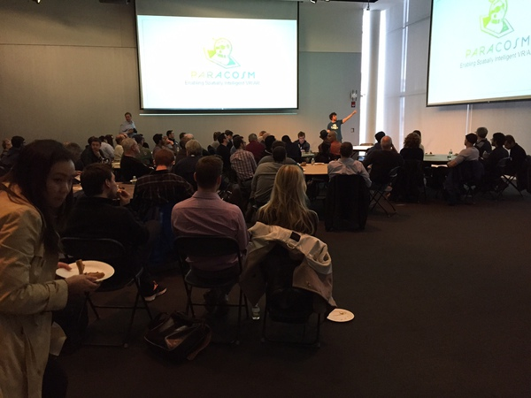

Our Community
The Boston area is one of the world's largest concentration of machine vision and image processing, with an amazing combination of universities, research labs, mature companies and startups.
 Boston Imaging and Vision (BIV) is an organization dedicated to bringing the our community together in Boston and throughout Massachusetts. We have monthly meetups where we have about 120 people per event. Please join us at our next meetup. We also mail out monthly notices of upcoming machine vision events to folks who sign up on the meetup page.
Member Organizations
We will soon begin accepting member companies to support our community.
Organizers
And, we have some fantastic organizers who work hard to bring the community together:
Youssef Rouchdy: founder of Boston Imaging and Vision
Samson Timoner: founder of two machine vision companies.
Magnus Snorrason: founder of one machine vision company, CTO of two.
Social Media
We're all busy on our companies, so that we don't spend a ton of time on social media. We're starting to experiment with a hashtag, #BostonImageVision
Helpers
We are also looking for people to help out, and speakers. Contact us at BostonImagingVision@gmail.com